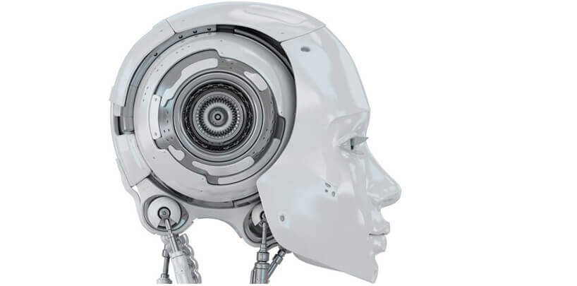

新闻动态
-
2016.05.20
机械与能源工程系主任融亦鸣专访：创新对于机械格外重要 -
2016.05.20
机械与能源工程系举办师生见面会第一届南科大机械工程论坛顺利召开 -

2016.05.20
我校举办国际交叉学科论坛114名专家学者齐聚共话交叉融合创新 -
2016.05.20
南方科技大学诚邀海内外学子申报
第二届南科大机械论坛报告
《康复机器人研究动态与未来思考》
学术论坛
2016-05-04
2016年5月4日，机械与能源工程系（以下简称：机械系）举行了第二届南科大机械工程论坛。华中科技大学数字制造装备与技术国家重点实验室熊蔡华教授应我校机械系主任融亦鸣教授的邀请，开展了题为“康复机器人研究动态与未来思考”的学术报告
熊蔡华教授在深入剖析国内外人口结构及老龄化的基础上，阐述了康复机器人的必要性。从穿戴式外骨骼、穿戴式交互装备、智能假肢、助行机器人等层面，多视角地介绍了国内外康复机器人的研究现状与发展趋势。针对康复机器人发展面临的挑战性难题，介绍了人机电一体化领域的国际重大研究计划，并对康复机器人的未来发展做了一些探讨。
机械系主任融亦鸣教授在总结了康复机器人相关技术特点的基础上，提出了智能机器人的研究需要多种交叉学科共同完成，但先进制造与自动化是重中之重，而这恰恰是机械系的学科发展方向。机械系将继续加大对机器人研究的投入，同时希望在座的学生如有兴趣可以一起加入机器人研究团队，为机器人相关研究及产业贡献自己的力量。
在互动环节，熊蔡华教授和融亦鸣教授认真回答了师生们的提问，并与其进行了积极的讨论和交流。
文字：学生新闻社 蔡多